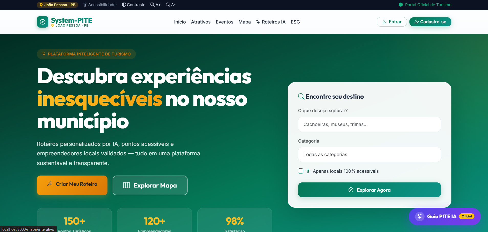

Projeto colaborativo · Hackathon · 2026
System-PITE
Plataforma orientada a dados para conectar turistas, empreendedores e a administração municipal.
Participei do desenvolvimento full stack de fluxos de roteiros inteligentes, IA aplicada, perfil de turista, homologação de empreendedores e administração.

Problema
A gestão municipal de turismo envolve dados dispersos, diferentes perfis de acesso e a necessidade de equilibrar promoção econômica, acessibilidade, transparência e sustentabilidade. O projeto precisava atender turistas, empreendedores e gestores em uma mesma plataforma.
Solução
O System-PITE organiza a jornada pública e os fluxos administrativos: descoberta de atrativos, roteiros personalizados, mapa, cadastro de estabelecimentos, homologação municipal, indicadores ESG e painéis de gestão.
- Roteiros inteligentes considerando perfil, tempo, orçamento e interesses do turista.
- Governança municipal com aprovação de estabelecimentos, selo de validação e trilhas de auditoria.
- Acessibilidade e ESG incorporados aos filtros, indicadores e relatórios do produto.
Minha contribuição
O histórico público registra 11 commits de minha autoria. Minha participação atravessou regras de negócio, banco de dados, interface e integração dos módulos.
- Implementei os módulos de roteiros inteligentes e inteligência artificial aplicada ao turismo.
- Desenvolvi o fluxo de homologação de empreendedores pela Secretaria de Turismo e o selo municipal.
- Trabalhei no perfil do turista e em fluxos administrativos de aprovação, eventos, auditoria e dashboards.
- Corrigi consultas relacionadas, migrations e inconsistências de colunas durante a integração final.
Arquitetura
A aplicação segue a arquitetura MVC do Laravel, com serviços dedicados para roteiros, métricas ESG e acessibilidade. Docker padroniza a execução da aplicação e do PostgreSQL.
Escopo entregue
A documentação do repositório mapeia 23 requisitos do hackathon e inclui instruções de execução com Docker, dados iniciais e diferentes perfis de acesso. O resultado é um protótipo replicável que cobre a experiência pública e a operação administrativa.